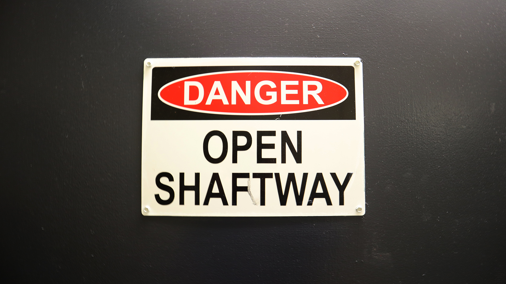

For this image, I took advantage of negative space and contrast. This was the idea of the original image, and being able to edit it helped me hone in on these key aspects. The sign that I took the picture of has a lot of light and dark aspects, which made it easy to edit in a way that suited my idea for the composition. The dark background contrasts heavily with the white of the sign and the bold letters, and I was able to accentuate this in post. The negative space surrounding the sign in the middle allows the sign to stand out and contrast starkly.